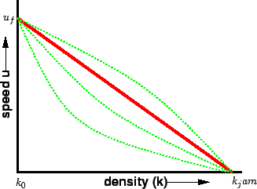
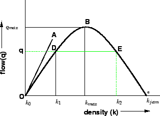
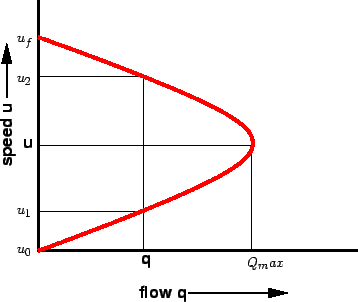
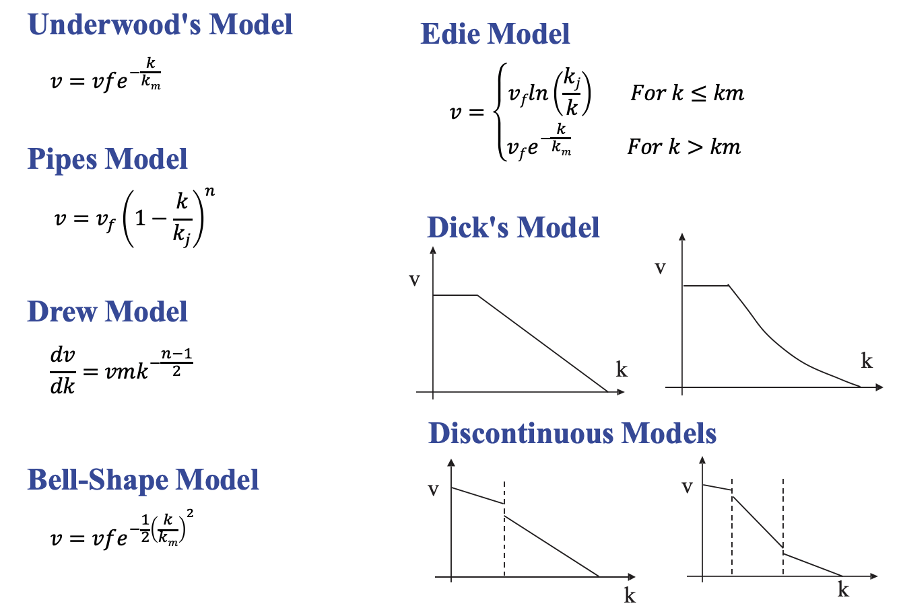

Civil 303
Transport Operations and Pavements
Traffic Flow Fundamentals
Dr Minh Kieu
Department of Civil and Environment Engineering, University of Auckland
These slides:
http://bit.ly/303-traffic-flow
Our world-class traffic jams!

Source: NZIER (2017),Benefits from Auckland road decongestion
What causes traffic jams?
What causes traffic jams?
Direct factors:
Traffic demand: Too many cars on the roads
Road capacity drops due to incidents, weather, or road conditions
Dynamic disruptions in traffic flow due to lane-switching, tailgating, sudden stop, etc.
Indirect factors:
Land-use factors
Socio demographics
Traffic Flow Fundamentals
2 lectures and 2 tutorials
10% of the test, then 25% of the assignment
Mostly numerical problems
Learning outcomes:
1. Understand the traffic flow theory
2. Understand the distribution of vehicle arrivals
3. Evaluate variables for unsignalised traffic flow
What are 'traffic studies'?
A traffic study is the collection and analysis of measurable factual data relating to traffic and its characteristics.
What is the 'flow' in flow-density-speed relationship?

The total number of vehicles passing a given point in a given time. Traffic flow is expressed as vehicles per hour (veh/hr)
\[\begin{aligned} Flow(q) \quad q = \frac{N}{T} \ (veh/hr) \\ \end{aligned} \]Traffic flow data can be collected by:
manual counting of vehicles
traffic counting devices
loop detectors
big data e.g. mobile phone data, etc
What is 'density'?

The average number of vehicles that occupy one mile or one kilometer of road space (veh/km)
\[\begin{aligned} Density(k) \quad k = \frac{N}{L} \ (veh/km) \\ \end{aligned} \]What is 'speed': Speed is a vehicle's rate of motion
There are two ways to measure speed:
Time-mean-speed is calculated from the individual speed recorded for vehicles passing a point over a selected time period
\[\begin{aligned} v_t = \frac{\sum_{i=1}^N{v_i}}{N} \\ \end{aligned} \]Space-mean-speed is calculated by dividing the average travel time by the measured distance
\[\begin{aligned} v_s = \frac{\Delta x}{\Delta \bar{t}} = \frac{\Delta x}{\frac{1}{N} \sum_{i=1}^N{\frac{\Delta x} {v_i}}} = \frac{N}{\sum_{i=1}^N{\frac{1} {v_i}}} \\ \end{aligned} \]Mean Speed in Traffic Engineering usually means Space-mean-speed!
What is 'traffic flow theory'?
Traffic flow theory involves the development of mathematical relationships among the three primary elements of a traffic stream namely flow, density and speed.
Read more:
https://lost-contact.mit.edu/afs/eos.ncsu.edu/info/ce400_info/www2/flow1.html
Speed & Density relationship: Fill in the blank
When density is zero, speed will be ...
When density is maximum, speed will be ...
1st fundamental diagrams of traffic flow: Speed-density relationship
Greenshields (1935) carried out one of the earliest recorded works hypothesized a linear relationship between speed and density
\[\begin{aligned} v = v_f \bigg( 1 - \frac{k}{k_j} \bigg) \\ \end{aligned} \]Special Speed & Density Conditions
Special speed-density conditions:
Free Flow Speed: This is the mean speed that vehicles will travel on a roadway when the density of vehicles is low. Under low-density conditions, drivers no longer worry about other vehicles. They subsequently proceed at speeds that are controlled by the performance of their vehicles, the conditions of the roadway, and the posted speed limit.
Jam Density: Extremely high densities can bring traffic on a roadway to a complete stop. The density at which traffic stops is called the jam density.
2nd fundamental diagram of traffic flow: Flow & Density relationship:
This one is more challenging!
When density is zero (Free-flow condition), flow will be ...
When density is maximum (Jam density), flow will be ...
2nd fundamental diagrams of traffic flow: Flow-density relationship
Some characteristics of an ideal flow-density relationship
When the density is zero, flow will also be zero,since there is no vehicles on the road.
When the number of vehicles gradually increases the density as well as flow increases.
Critical density: some density between zero density and jam density, when the flow is maximum.
Jam density: When more and more vehicles are added, it reaches a situation where vehicles can't move.
2nd fundamental diagrams of traffic flow: Flow-density relationship
More on Greenshields model of Flow-density
\[\begin{aligned} q = k v = k v_f \bigg( 1 - \frac{k}{k_j} \bigg) = v_f \bigg( k - \frac{k^2}{k_j} \bigg) \\ \end{aligned} \]Note in the figure that the maximum flow rate $q_m$ represents the capacity of the highway. The traffic density that corresponds to this capacity flow rate is critical density $k_m$, and the corresponding optimum speed is $v_m$
More about capacity on a later chapter in this course
2nd fundamental diagrams of traffic flow: Flow-density relationship
\[\begin{aligned} q = v_f \bigg( k - \frac{k^2}{k_j} \bigg) \\ \end{aligned} \]
If we differentiate the above equation and then equating to zero, we can derive the traffic condition at maximum flow:
\[\begin{aligned} \frac{dq}{dk} = v_f \bigg( 1 - \frac{2k_m}{k_j} \bigg) = 0 \quad so \quad \bigg( 1 - \frac{2k_m}{k_j} \bigg) = 0 \\ \end{aligned} \]
As the free-flow speed $v_f$ is not equal to zero so: $k_m = \frac{k_j}{2}$
And earlier we have: $ v= v_f – v_f*k/k_j $
Substituting $k_m$ into speed density relationship at maximum flow condition gives:
\[\begin{aligned} v_m = v_f \bigg( 1 - \frac{k_j}{2k_j} \bigg) = \frac{v_f}{2} \quad and \quad q_m = v_m k_m = \frac{v_f k_j}{4} \\ \end{aligned} \]
Example 1: Greenshield's Model
Given a free flow speed of 100 km/h, a jam density of 1000 veh/km, and an observed maximum flow of 10,000 vehicles per hour. Determine the linear equation for velocity for these conditions, and determine the speed and density at maximum flow (critical) conditions. How do the theoretical maximum flow and observed maximum flow compare?
3rd fundamental diagram of traffic flow: Speed & Flow relationship:
More interesting facts about traffic
When Flow is zero, what can you say about mean speed?
3rd fundamental diagrams of traffic flow: Speed-flow relationship
The linear speed-density model can be rearranged into the following speed-flow model:
\[\begin{aligned} k = k_j \bigg( 1 - \frac{v}{v_f} \bigg) \\ \end{aligned} \] \[\begin{aligned} q = k v = v k_j \bigg( 1 - \frac{v}{v_f} \bigg) = k_j \bigg( v - \frac{v^2}{v_f} \bigg) \\ \end{aligned} \]Fundamental diagrams of traffic flow: Other models
Fundamental diagrams of traffic flow: Empirical values

Fundamental diagrams of traffic flow: All-in-one digram

Example 2: Briefly explain and illustrate with the aid of sketches the following
Test question 2021
(a) Sketch a set of simplistic diagrams of the relationship between Speed, Flow and Density of cars on a uninterrupted highway.
(b) In your own words, briefly explain each diagram in your diagram set to describe the relationship between Speed, Flow and Density. Point out on the diagrams the free-flow speed, jam density and maximum flow.
Learning outcomes:
1. Understand the traffic flow theory
2. Understand the distribution of vehicle arrivals
3. Evaluate variables for unsignalised traffic flow
Time space diagram
(from Traffic Studies chapter)
Illutrates the spatial-temporal trajectory of each vehicle.

Each line represents the trajectory of a vehicle
The horizontal gap (time gap) between two vehicle at the same position shows the time headway (or just headway) between them
The vertical gap (space gap) between two vehicle at the same time shows the space headway (or spacing) between them
The relationship between time-space diagram and fundamental diagram
A shock wave exists whenever the traffic conditions change. A shock wave propagates along a line of vehicles in response to changing conditions at the front of the line.
Source: Dr Yildirimoglu, University of Queensland (2021)
Shockwaves seeing from a birdeye view (Youtube: 6ZC9h8jgSj4)
Vehicle arrival rate is different to traffic flow
Irregularity of vehicle arrivals + variability of time taken for each to leave the study area = queues of vehicles build up and dissipate
Vehicle arrival patterns

Source: Dr J Kim, University of Queensland
The most popular distribution to model the arrival of traffic is the Poisson distribution
The Poisson distribution is the discrete probability distribution of the number of events occurring in a given time period
these events occur with a known constant mean rate
independently of the time since the last event
time between arrivals follows a negative exponential distribution.
The arrival of traffic is often assumed to follow the Poisson distribution
\[\begin{aligned} P(X=n)={\frac {(\lambda t) ^{n}e^{-\lambda t }}{n!}}, \end{aligned} \]where $P(X=n)$ is the probability of exactly n vehicles arriving within a time interval t
$\lambda$ average arrival rate (veh/unit time) Note: Only equals to traffic flow near free-flow traffic conditions!
$X$ number of vehicles arriving in a specific time interval
$t$ duration of the time interval over which vehicles are counted
More to read:
https://towardsdatascience.com/the-poisson-distribution-and-poisson-process-explained-4e2cb17d459
Waiting Time: How long should we wait for the next event?

In a Poisson process, the following equation shows the probability of waiting more than a specified time.
\[\begin{aligned} P(h>t)=e^{-\lambda t }, \end{aligned} \]Recall: the time gap between the two vehicles is called Headway
The above equation can then be used to estimate the mean Headway
Example 3: Calculation of traffic flow
Given a highway with an average traffic flow of 240 veh/hr. Assuming that the flow is free-flowing and follows a Poisson distribution, calculate:
Probability of there being no vehicles in 6s.
Probability of there being 3 vehicle in 6s.
What is the cumulative likelihood of seeing fewer than 3 vehicles arrive in 6s?
What is the propability of having 3 or more vehicles arrive in 6s?
Example 3: Calculation of traffic flow
\[\begin{aligned} P(X=n)={\frac {(\lambda t) ^{n}e^{-\lambda t }}{n!}}, \end{aligned} \]$\lambda$ = (240 veh/hr) / (3600 sec/hr) = 0.0667 veh/s
$\lambda t $ = 0.0667 veh/s x 6 s = 0.4 veh
\[\begin{aligned} P(0)={\frac {0.4^{0}e^{-0.4}}{0!}}=0.67 \end{aligned} \] \[\begin{aligned} P(3)={\frac {0.4^{3}e^{-0.4}}{3!}}=0.007 \end{aligned} \]Example 3: Calculation of traffic flow
The cumulative likelihood of seeing fewer than 3 vehicles arrive in 6s
$P(n<3) = P(n=0) + P(n=1) + P(n=2) $
$ = 0.67 + 0.27 + 0.05 = 0.99 $
Example 3: Calculation of traffic flow
the propability of having 3 or more vehicles arrive in 6s?
$ P(n>=3) = 1 - P(n<3) = 1- 0.99= 0.01 $
Limitations: Poisson distribution is most realistic in light traffic conditions only.
Example 4:
On a particular section of motorway, accidents occur once per day on average. Assume that the number of accidents is random and follows a Poisson distribution, calculate:
(a) The probability of there being no accident in a day
[Answer: 0.37]
(b) The probability of there being only one accident in a day
[Answer: 0.37]
(c) the probability of there being more than three accidents in a day
[Answer: 0.02]
Example 5: Poisson distributed traffic flow
An observer counts 360 veh/h at a specific highway location. Assuming that the arrival of vehicles at this highway location is Poisson distributed, estimate the probabilities of having 0, 1, 2, 3, 4 and 5 or more vehicles arriving over a 20-sec time interval.
[Answer: $P(0) = 0.14$]
...
[Answer: $P(n \geq 5) = 0.05$]
Learning outcomes:
1. Understand the traffic flow theory
2. Understand the distribution of vehicle arrivals
Unsignalised traffic flow: Areas of interests
Uninterrupted roads
Priority controlled intersections (Stop, Yield)
Roundabouts
Unprotected pedestrian crossings
Unsignalised intersections

The idea is to limit and simplify the points of conflicts
Gap acceptance models: applicable in situations where vehicles or pedestrians cross/merge into traffic stream, which requires them to select an acceptance time gap in the priority traffic stream.
Critical gap - the time difference (in secs) between two successive vehicles in the priority traffic stream (back bumper of the lead vehicle to front bumper of the following vehicle), which is required for the first vehicle waiting in the minor traffic stream to cross or merge with the priority traffic stream.
In practice, the critical gap depends on the individual judgments, the current travel speed, weather, road condition, etc.
Estimate delays of vehicles/pedestrians merge/cross into the main flow

3 important variables for estimating delays:
1.Critical gap ($\alpha$): assume a similar value acceptable to all drivers at all times.
2. Follow-up headway ($\beta$) : additional time needed in the main flow for not one, but two vehicles to cross or merge into the main traffic stream.
3. The distribution of vehicle arrivals: usually Poisson
Adams's delay to minor flow
Major assumptions:
The traffic flow is Poisson distributed
There is no queue on the minor queue
Generally use when minor traffic arrival rate of the minor flow is less than 200 veh/h
The average delay to all vehicles seeking to cross or merge a priority traffic stream is given by:
\[\begin{aligned} \bar{W} = \frac{1}{\lambda} (e^{\lambda \alpha} - \lambda \alpha - 1) \end{aligned} \]Where: $\lambda$: arrival rate of the MAJOR flow
$\alpha$: critical gap (in seconds)
Example 6:
During an off-peak period, a minor flow of 100 veh/hr joins a major flow of 300 veh/hr near the beginning of an on-ramp of a motorway. The minor flow of 100 veh/hr is controlled by give-way signs, requires at least 4 secs of critical gap to join the major flow. Assuming there is no queuing and that both traffic flows are free- flowing and random, calculate:
(a) the number of vehicles per hour in the minor flow which are expected to be delayed
[Answer: 28 veh/hr]
(b) the average delay to the minor flow (hint: using Adam's delay formula)
[Answer: 0.75 s]
(c) if during peak periods, the minor flow increases to 150 veh/hr and the major flow increases to 600 veh/hr., re-calculate (a) and (b) above
[Answer: 97 veh/hr, delay = 1.69s]
Example 7:
The two-way traffic flows through a suburban shopping street are 250 and 290 vehicles per hour respectively. There is no pedestrian crossing and pedestrians who cross the street at an average rate of one every 20 sec, require 8 secs to do so. Assuming that the traffic is free flowing and that pedestrians wish to cross the street at random, determine:
(a) the percentage of time a pedestrian will not be delayed
[Answer: 30%]
(b) the number of pedestrians per hour who are delayed in crossing the street
[Answer: 126 ped/hr]
(c) the total delay to pedestrians wishing to cross the street in pedestrian minutes per hour
[Answer: 22.5 ped-min/hr]
Tanner's delay to minor flow
Major assumptions:
For case with minor traffic flow > 200 veh/h
Takes queuing of the minor flow into account.
Average delay:
Long formula! But we often use pre-estimated values from the Tanner's graph
Tanner's graph: Pre-estimated average delay
Where: $\lambda$: arrival rate of the MAJOR flow, $\alpha$: critical gap (in seconds), $\beta$: follow-up gap (in seconds)
Absorption capacity of major traffic stream
Absorption capacity is defined as the maximum number of minor stream vehicles that can cross or merge a major traffic stream. For a single lane approaches with random flow, the absorption capacity can be calculated as follows:
\[\begin{aligned} S_a={\frac {\lambda e^{-\alpha \lambda}}{1 - e^{-\beta \lambda}}} \end{aligned} \]$S_a$ = absorption capacity (veh/s)
$\lambda$ = major (priority) stream flow (veh/s)
$\alpha$ = critical gap (s)
$\beta$ = follow-up headway
Note: In practice, the practical capacity is generally around 80% of the theoretical capacityExample 8: A multi-storey car park exits onto a one-way street carrying 1200 veh/hr - this traffic can be considered to be free flowing (random), consider the following scenarios:
(a) Assuming exiting vehicles require a 4 sec initial gap and a 2 sec follow-up gap, calculate the maximum practical flow that exit from the car park in practice. Given that the practical value should be around 80% of the theoretical value.
[Answer: 518 veh/hr]
(b) Re-determine the above result, if exiting vehicles require a 5 sec initial gap and a 3 sec follow-up gap
[Answer: 288 veh/hr]
(c) If the exit flow from the car park is 300 veh/h, use the Tanner's graph to identify the expected average delay to vehicles exiting, assuming vehicles require a 4-sec initial gap and 2-sec follow-up gap
[Answer: 9.5s]
(d) Use the Tanner's graph to reidentify (c) assuming vehicles require a 5-sec initial gap and a 3-sec follow-up gap.
[Answer: 40s]
Further readings:
TRB Special Report (2001) Traffic Flow Theory, A State-of-the-Art Report, A revised version.
TRB Special Report 165 (1975) Traffic Flow Theory, A Monograph.
Mannering, F.L., Kilareski, W.P. and Washburn, S.S. (2005). Principles of Highway Engineering and Traffic Analysis. 3rd Edition, Wiley.
Ogden K W and Taylor S Y (1996 and reprinted 1999) (Editors). Traffic Engineering and Management, Monash University, Melbourne, Australia.
Problem 1:
The average number of breakdowns of a large regional bus fleet is 2 breakdowns/day. At present, three relief buses are available. Assuming that breakdowns occur at random with the number of breakdowns following a Poisson distribution and each bus can be made roadworthy by the next day, determine:
(a) The probability that on any one day three relief buses are inadequate;
[Answer: 0.14]
(b) the number of relief buses required to ensure that on any one day, the probability of not having sufficient relief buses is less than 2%.
[Answer: 5 buses]
Problem 2:
Traffic data are collected in fifteen 60-seconds intervals at a specific highway location with counts as follows:
3, 5, 4, 10, 7, 4, 8, 11, 9, 5, 3, 10, 9, 7, 6
Assuming that the traffic is Poisson distributed and continues to arrive at the same rate as observed in the first fifteen minutes, what is the probability that 6 or more vehicles will arrive in each of the next three 60-seconds time intervals?
[Answer: 0.29]
Problem 3:
Consider a traffic stream with a flow of 360 veh/h. Assume that the vehicle arrivals are Poisson distributed. What is the probability that the headway between successive vehicles will be less than 8 seconds, and what is the probability that the headway between successive vehicles will be between 8 and 10 seconds?
[Answer: 0.55, 0.37 and 0.08]
Problem 4:
On a free-flowing highway, a traffic count records a steady 450veh/hr. By assuming that the headways are exponentially distributed, determine:
(a) the probability of a headway being less than 2.0 secs.
[Answer: 0.22]
(b) the probability of a headway being less than 6.0 secs.
[Answer: 0.53]
(c) the probability of a headway being greater than or equal to 8.0 secs.
[Answer: 0.37]
(d) the probability of a headway being between 4.0 secs and 6.0 secs.
[Answer: 0.14]
Problem 5: Exam Civil 361 in 2020
There are also 50 pedestrians per hour who will cross the major road without a pedestrian crossing – so pedestrians have to wait for a gap in the major flow. Each pedestrian requires a 10-seconds gap to cross the major road.
Problem 5: Exam Civil 361 in 2020
Based on the given information, determine the following:
(a) The probability of delay and total delay (in veh-h/h) for the Left Turning (LT) traffic from the proposed development.
(b) Estimate the average delay for the Right Turning (RT) traffic from the proposed development
(c) The average delay and total delay for pedestrians crossing the main road in (ped-min/h).
(d) The practical absorption capacity of the major road for the Left Turning (LT) and Right Turning (RT) traffic from the proposed development in (veh/h).
Learning outcomes:
1. Understand the traffic flow theory
2. Understand the distribution of vehicle arrivals
3. Evaluate variables for unsignalised traffic flow
Recommended further read:
1. Chap 4. of Prof. Carlos Daganzo’s book Fundamentals of Transportation and Traffic Operations (2007)
2. Prof. Nikolas Geroliminis’ lecture Fundamentals of Traffic Operations and Control, Spring 2010 EPFL
3. Lecture notes: Principles of Highway Engineering and Traffic Analysis (2009) by Fred Mannering, Scott Washburn and Walter Kilareski
4. Lecture notes: 9th Dynamic Traffic Flow Modeling and Control (2010) by Prof. Markos Papageorgiou
5. Fred Hall (1997) Traffic stream characteristics.
6. AustroadsGuide to Road Design (2010)
7. Austroads Guide to Traffic Management (Part 2 - 2015, Part 3 - 2013, Part 6 - 2013)